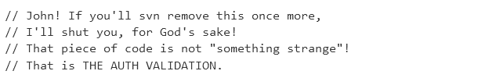

Code comments
“if your code needs comments, it’s not clear enough on its own.”
Not always true: “if the code is so unclear that it requires a comment, then maybe it should be rewritten instead”
Context
- When senior and junior people join the team.
- When you come back to the code after a few weeks or more.
Guides
- Do not comment the obvious. Use variable names that make the obvious more obvious.
- When doing something that no variable name can make obvious (complicated algorithms), provide comments as headers in the logic.
- If someone is likely to come along and see code they could think needs changing, leave a comment explaining why to leave it like this.
